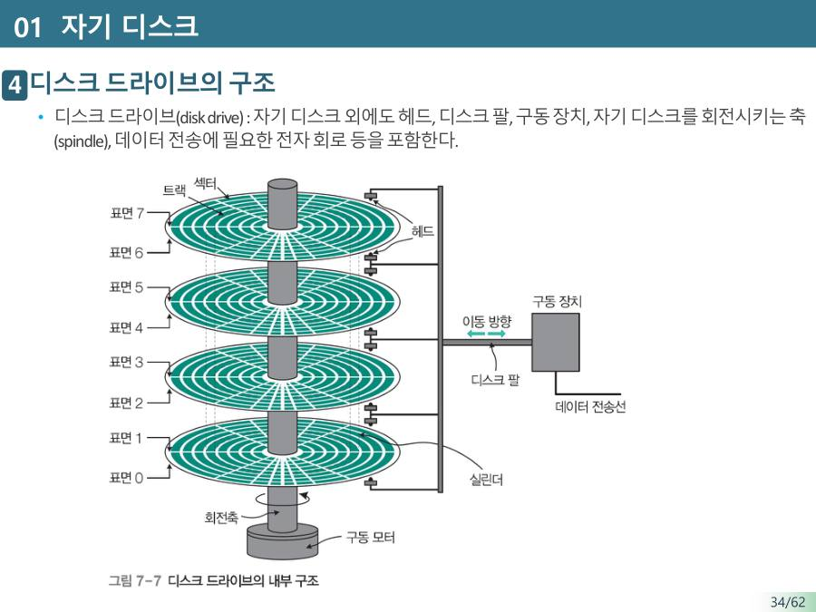

HDD의 구조 — 판, 헤드, 트랙, 섹터 ★★
HDD(Hard Disk Drive, 하드디스크)는 플라스틱이나 알루미늄으로 만든 둥근 판에 자석 성질이 강한 물질(강자성체)을 입힌 장치예요. 이 판이 모터로 빙글빙글 돌고, 팔 끝의 헤드가 판 위로 움직이며 읽고 써요. 레코드플레이어와 모양이 비슷해요.
저장 원리는 전기와 자석의 관계예요. 쓸 때는 헤드에 전류를 흘려 자기장을 만들고(앙페르의 법칙) 판 표면을 자석 방향대로 자화해요. 읽을 때는 판이 헤드 아래를 지나가면서 자기장이 변해 헤드에 유도 전류가 흘러요(패러데이의 법칙). 방향이 N극이면 1, S극이면 0처럼 구분해요.

| 용어 | 뜻 |
|---|---|
| 플래터 (disk) | 자성 물질을 입힌 둥근 판. 한 장이 아니라 여러 장을 쌓고 양면을 써요. 슬라이드에서는 "디스크"로 불러요 |
| 헤드 (head) | 데이터를 읽고 쓰는 부분. 디스크 팔에 달려 있어요 |
| 트랙 (track) | 판 위의 동심원 한 줄 |
| 섹터 (sector) | 트랙을 잘게 나눈 조각. 한 번에 읽거나 쓰는 데이터의 최소 단위 |
| 실린더 (cylinder) | 서로 다른 판(표면)에 있지만 위치가 같아서 동시에 접근할 수 있는 트랙들의 묶음 |
| RPM | 분당 회전수(rotations per minute). 판이 얼마나 빨리 도는지의 스펙. 5400, 7200, 10000 등 |
| 디스크 드라이브 | 디스크 외에 헤드, 디스크 팔, 구동 장치, 판을 돌리는 축(스핀들), 전자 회로까지 포함한 전체 |

섹터 사이에는 섹터 간 갭이, 트랙 사이에는 헤드가 잘못 맞춰지거나 자기장이 섞여서 생기는 오류를 막는 트랙 간 갭이 있어요. 초기 디스크는 표면당 트랙 500~2,000개, 트랙당 섹터 32개였고, 요즘은 트랙이 수천 개, 섹터가 수백 개예요.
HDD가 왜 느릴까요? 판을 돌리고 헤드를 움직이는 물리적인 기계 동작이 필요하기 때문이에요. 전기 신호만 쓰는 반도체보다 빠르게 만드는 데 한계가 있고, 모터 소리와 소음이 나기도 해요.
참고 — 판 위의 데이터를 일정한 비율로 읽는 방식인 CAV(등각속도, 회전 속도가 일정, 구조가 간단하지만 바깥쪽 트랙의 저장 공간이 낭비됨)와 CLV(등선속도, 위치에 따라 회전 속도가 변함, 공간은 알뜰하지만 장치가 복잡함, CD·DVD가 사용)도 슬라이드에 있어요. 교수님이 따로 강조하지 않았어요.
HDD는 강자성체가 코팅된 디스크 표면에 헤드로 자화 방향을 기록하여 데이터를 저장하며, 디스크는 동심원의 트랙과 트랙을 나눈 섹터로 구성된다. 섹터는 한 번에 읽고 쓰는 데이터의 최소 단위이다. HDD는 디스크를 회전시키고 헤드를 물리적으로 이동해야 하므로 SSD보다 느리다.
잠깐 확인 — HDD에서 데이터를 한 번에 읽고 쓰는 최소 단위는?
섹터예요. 트랙은 판 위의 동심원 한 줄이고, 섹터는 그 트랙을 나눈 조각이에요.
화면을 가리고 "HDD의 구조 — 판, 헤드, 트랙, 섹터 ★★"을(를) 친구에게 설명하듯 한 문장으로 말해 보세요. 막히면 위의 빨간 칸만 다시 보고 넘어가요.